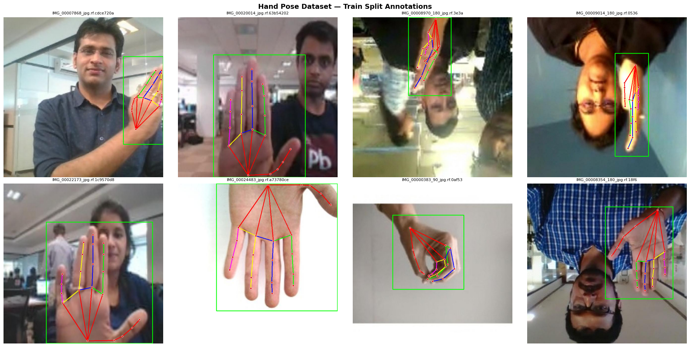
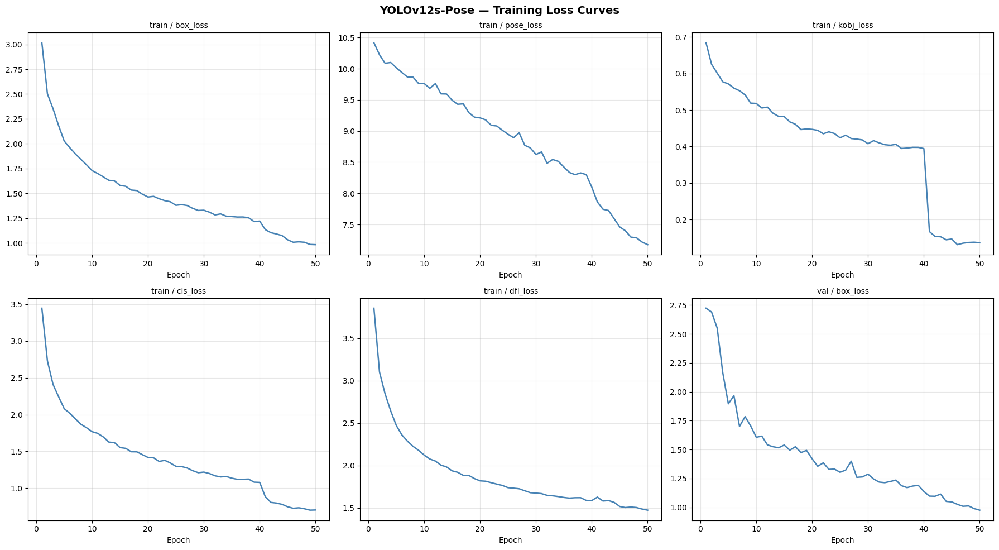
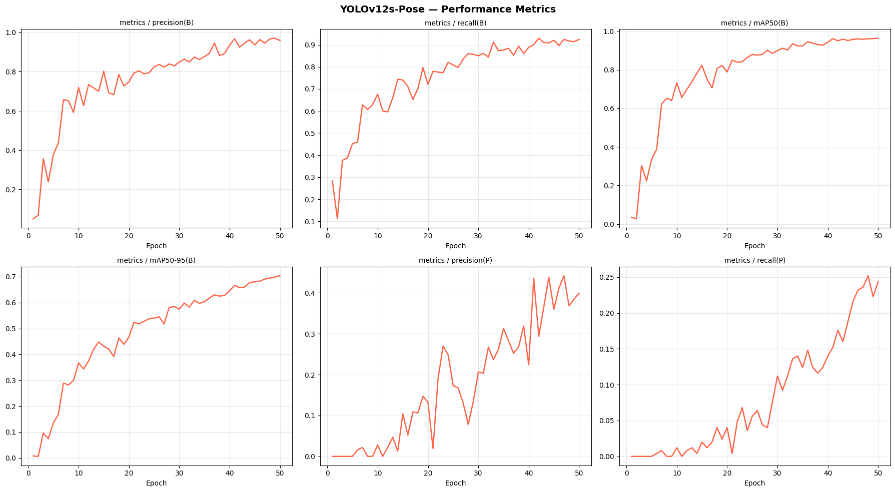
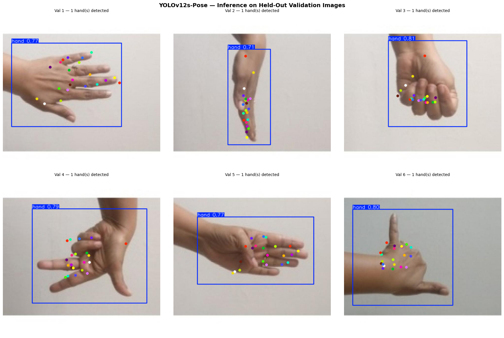
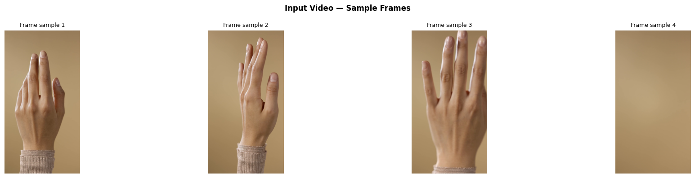
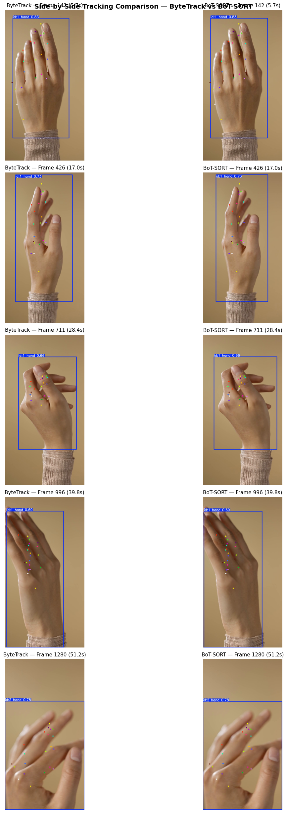
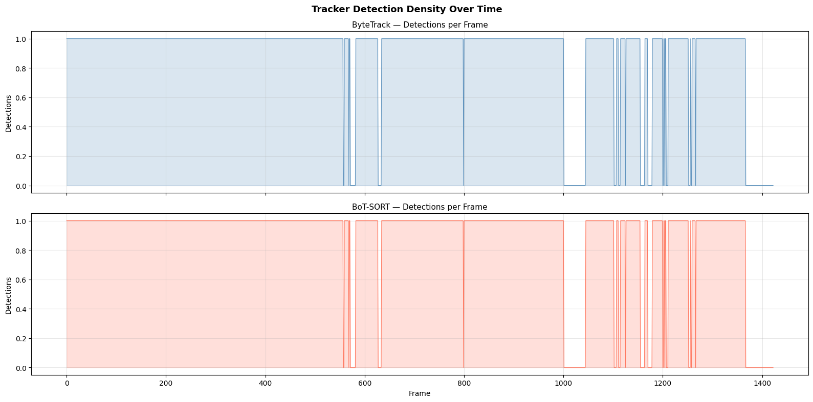
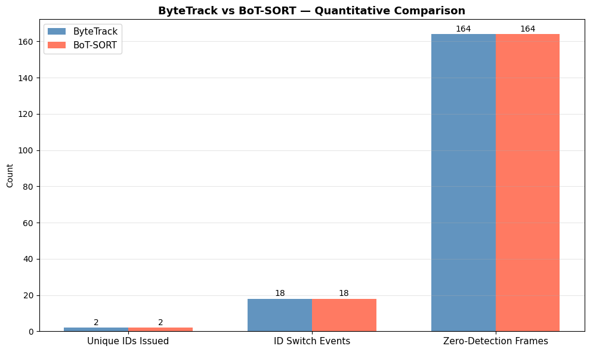

Hand Pose Estimation and Tracker Analysis Dashboard
Unified view of model training quality, validation metrics, tracking behavior, runtime speed, and visual evidence extracted from both notebooks.
YOLOv12s-Pose
Epochs: 50
Frames: 1423
Trackers: ByteTrack + BoT-SORT
Core Metrics Training + Tracking
Pose Training Quality Profile Validation Metrics
Tracker Speed Comparison Runtime and FPS
Tracker Stability Metrics ByteTrack vs BoT-SORT
Important Hyperparameters Most impactful settings
| Category | Parameter | Value | Why it matters |
|---|---|---|---|
| Training | epochs | 50 | Sets total optimization length. |
| Training | imgsz | 640 | Controls pose detail versus speed. |
| Training | batch | 16 | Stable memory usage on T4 GPU. |
| Training | patience | 15 | Early stopping against overfitting. |
| Augmentation | mosaic / fliplr / flipud | 1.0 / 0.5 / 0.0 | Expands hand pose diversity. |
| Loss Weights | pose / kobj | 12.0 / 1.0 | Biases learning toward keypoints. |
| Tracking | conf / iou | 0.30 / 0.50 | Detection acceptance and NMS behavior. |
| Tracking | track_high_thresh | 0.5 | Strong detections for primary matching. |
| Tracking | track_low_thresh | 0.1 | Keeps weak detections for recovery. |
| Tracking | new_track_thresh | 0.6 | Reduces false new IDs. |
| BoT-SORT | gmc_method | sparseOptFlow | Compensates camera motion. |
Demo Video Placeholder Directly playable on dashboard
This large embed is ready and can be replaced with any new YouTube URL later.
Project Links Kaggle + YouTube
Notebook Figures Gallery Click any figure to enlarge








Key Insights What the numbers imply
Detection is strong, pose is the bottleneck
Box metrics are high (mAP@0.50 = 0.9634), while pose mAP values are much lower. This pattern indicates the model identifies hand regions well, but accurate keypoint localization remains harder.
ByteTrack is significantly faster
ByteTrack reaches 26.5 FPS versus 16.9 FPS for BoT-SORT. In this dataset, both trackers report nearly identical continuity metrics, so speed becomes the deciding factor.
Zero-detection frames remain a reliability target
164 frames (11.5%) contain no detections in both tracker outputs. Improving pose detector robustness under motion blur/occlusion should improve tracker behavior more than tracker tuning alone.
Generated from cse445-yolov12s-hand-pose-training.ipynb and cse445-yolov12s-video-tracking.ipynb